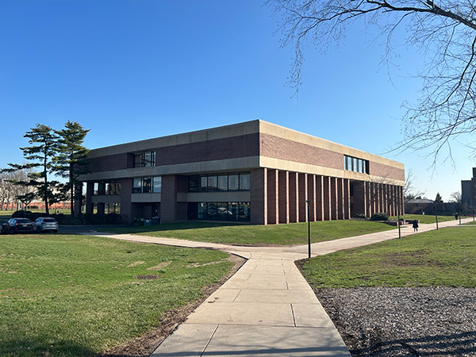
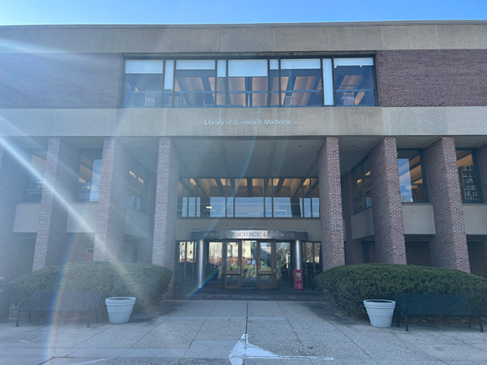
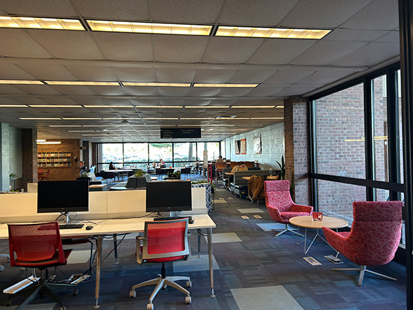
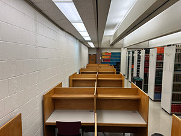
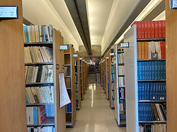
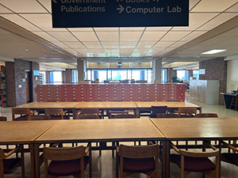
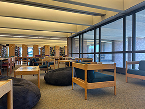
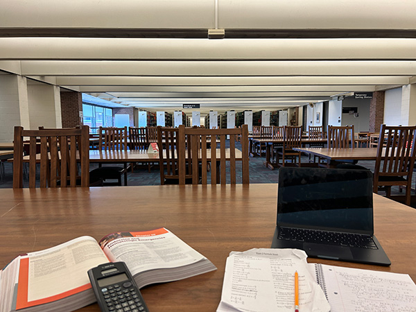

Libraries are often imagined as static places, that is, they are thought of as quiet buildings filled with books, desks, and students engaged in individual study. Yet our prolonged observations have revealed something far more exciting. Across the course of a day, patterns emerge. Certain seats are occupied almost immediately while others remain untouched for hours. Desks accumulate signs of continual occupation like chargers, notebooks, jackets, and coffee cups. Students adapt themselves to these conditions constantly, seeking silence, visibility, isolation, proximity, comfort, or distraction depending on circumstance. At the same time, these accumulated behaviors gradually reshape the atmosphere and function of the library itself.
This page examines the Library of Science and Medicine on Rutgers’ Busch campus as an ecosystem of reciprocal influence between environment and occupant. The exam presents a sequence of scenarios, observations, and behavioral prompts to simulate the library's influence on the reader. The questions that follow these scenarios are not intended to be all encompassing. In fact, we have intentionally written limited answer choices for the questions posed to the reader to abstract and emphasize the pressures that drive student behavior in libraries. The sequences that follow trace this relationship across arrival and fatigue. Together, they argue that the library is not merely a backdrop for academic work, but an active system that continuously organizes the behavior occurring within it while simultaneously being reorganized by that behavior in return.
It’s 8 am. It is the end of the semester. You’ve just dismounted off of the H bus at the Alison Road classrooms on Rutgers’ Busch campus into the cool spring morning. The grass is still wet with dew and the air is filled with petrichor and pollen, a familiar smell, a smell that reminds you of being younger, for reasons you can’t quite pin down.

You’re walking down a concrete path with groggy eyes and lethargic limbs. The gray, brutalist psychology building imposing is to your left. An open, muddied field with a flock of Canadian geese to your right. You make it down to the brick-and-cement face of the Library of Science and Medicine.

You’re anxious. You have an exam tomorrow, an exam you’ve known about for months, but you haven’t really gotten to do any “serious” studying yet. That’s why you’ve come here, to the library: for “serious” studying. You attempt to swallow your anxiety with a sip of your coffee and head through the glittering silver doors of the front entrance. Right now, the library looks relatively empty; you know this will not last. You must decide which floor to set up camp for the day.

The first is open, in discussion and spatial arrangement. There’s comfortable couches and desks for groups that have flocked here together, many of these spots provide great sightlines for people watching as other students enter the library.


The third floor is silent. No discussion is allowed, no conversations can be spoken aloud, but solitary study nooks abound.


The second floor is somewhere between these two extremes: it has both space for group work and desks for one, though you might need noise-cancelling headphones here if you need silence to focus.
Q: What is the most important factor to you in choosing a floor to study on?
It is 3:17 PM. You are at a desk in the third floor.

You have been in the same chair for nearly five hours. Your coffee is empty. You do not remember finishing it. You have reread the paragraph in front of you for a fourth time and still you feel like you have not processed a single sentence. Your eyes continue moving across the page anyway. The student at the table closest to you has changed twice. You begin considering that you might need a break.
Q: Which factor is the greatest contributor to your study fatigue?We hope that this brief exam has made the library no longer appear as just a neutral setting for academic work. We expect that readers may feel unsatisfied by the answers provider, or that multiple, if not all of the answers offered could have been true for their given scenarios. As mentioned in the introduction, this was intentional. We hope that the questions and their limited answers have helped to expose the often invisible relationship between students and the environments they inhabit. Access to silence, natural light, isolation, outlets, visibility, and even other anxious students all influence behavior in subtle but significant ways. In the future, we plan to expand the number scenarios presented, as just like the library space, we are ever evolving.